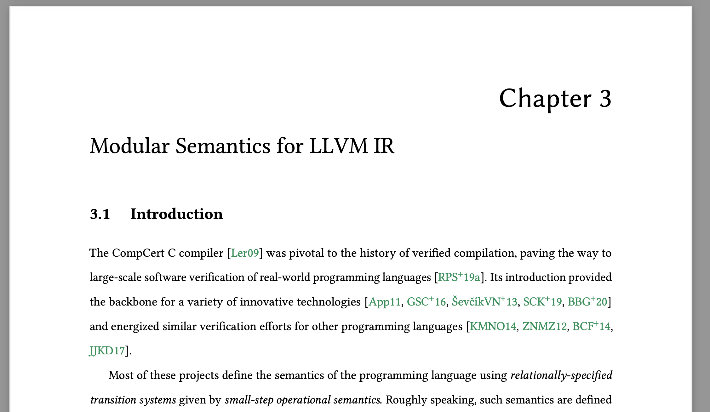
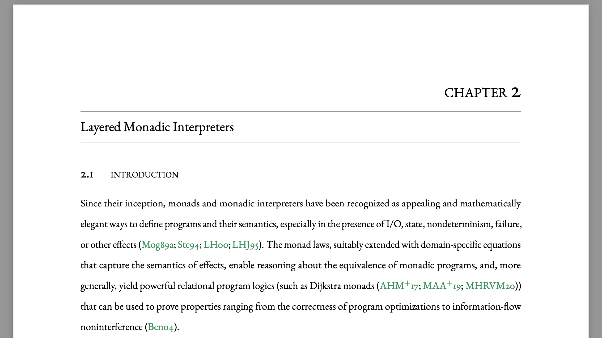

UPenn Dissertation Custom Style Sheet
The following two styles are custom style sheets that are in compliance with the University of Pennsylvania's
dissertation style guide as of December 2023.
Feel free to use, modify, and distribute as necessary.
As the university guidelines change regularly, make sure to double check with the university provost that the template is in compliance to the up-to-date guidelines.

